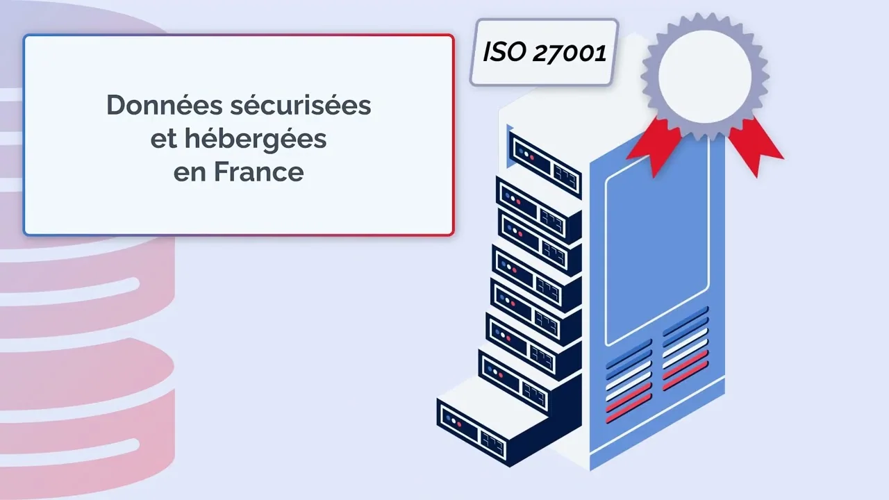
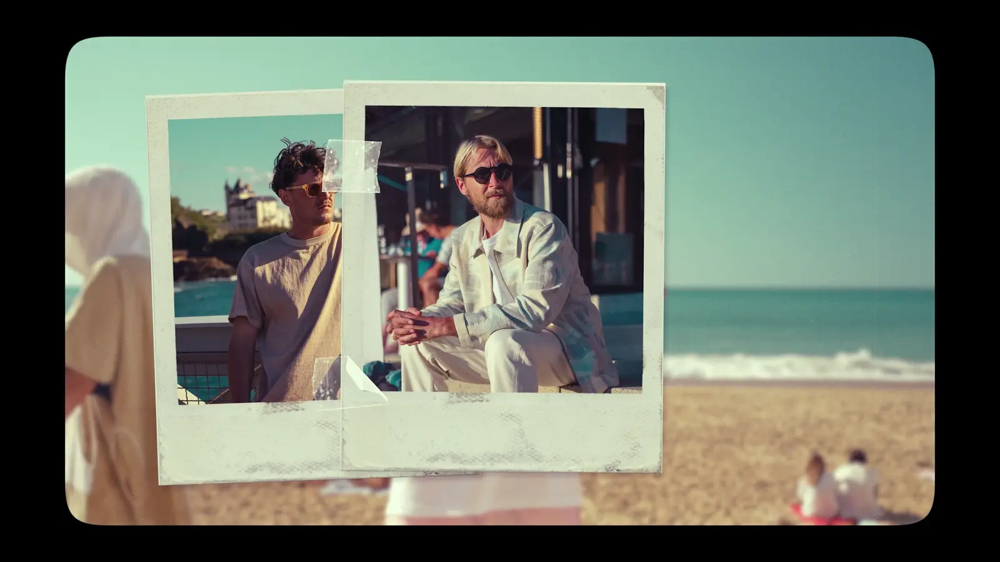
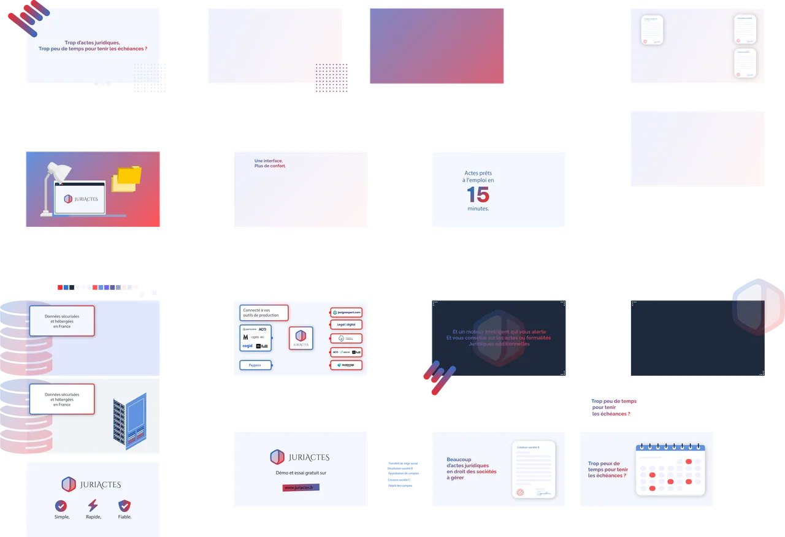
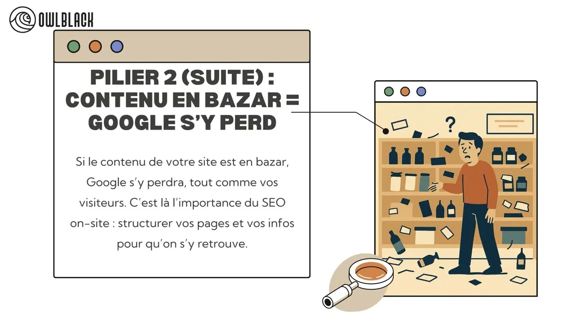
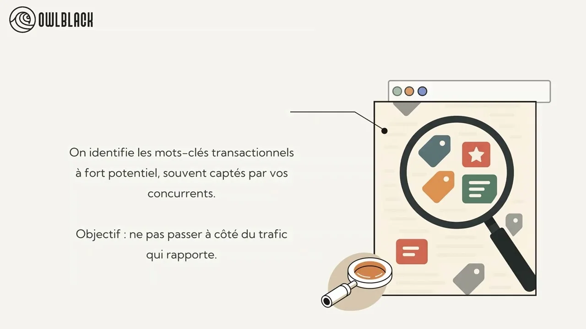
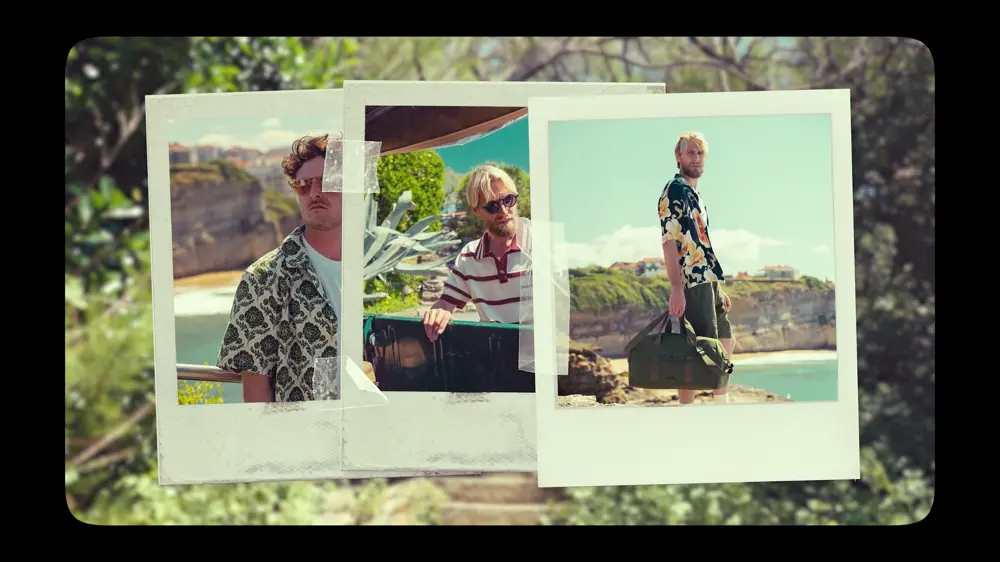
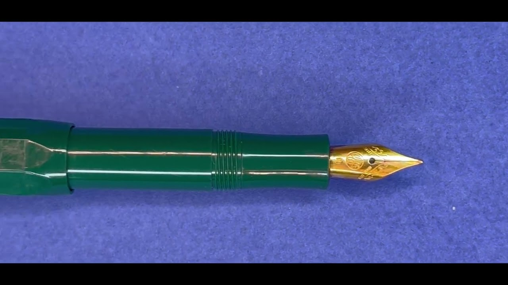
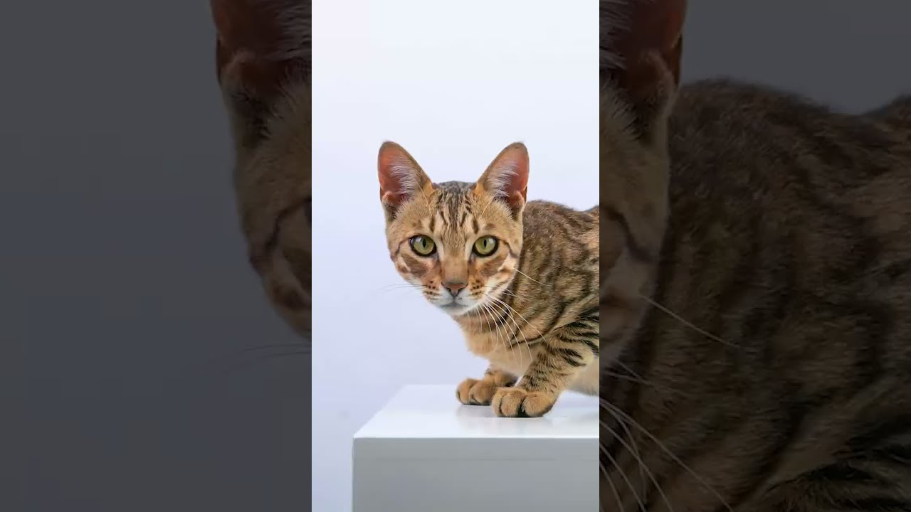

01.01STAGE OWLBLACK
STORYBOARD / ANIMATION / MONTAGE
Juriactes.
Du storyboard au film : éléments graphiques préparés sur Illustrator, animation sur After Effects et montage final sur Premiere Pro.
STORYBOARD / ANIMATION / MONTAGE
LA RÉGIE / SÉLECTION AUDIOVISUELLE
Donner une forme aux idées.
Un rythme aux images.

01 / ANIMER UNE IDÉE
Le dessin pose une intention.
Le mouvement la rend lisible.

Du storyboard au film : éléments graphiques préparés sur Illustrator, animation sur After Effects et montage final sur Premiere Pro.

Deux épisodes pédagogiques pour Owlblack.

↗SEOÉPISODE 01 / VOIR SUR YOUTUBE
↗SEAÉPISODE 02 / VOIR SUR YOUTUBEScript, adaptation d’illustrations Canva Pro et animation. Voix-off IA ElevenLabs, synchronisation et montage sur Premiere Pro.
02 / TROUVER LE RYTHME
Choisir ce qu’on montre.
Et le moment de le montrer.
Tournage à Bayonne et Biarritz aux côtés de Marco Fioretta. Cadrage vidéo, prises de vue photo et participation au montage. Sélection et post-production partagées.

Le même film.
Un autre instant.
La narration, puis l’intention publicitaire.
 ↗ Voir le filmYOUTUBE / TOUS HANSCÈNE
↗ Voir le filmYOUTUBE / TOUS HANSCÈNEUn personnage amputé d’une jambe avance face aux obstacles du quotidien. Le dessin intégré à la vidéo rend ses pensées visibles et accompagne son évolution. Un récit autour du handicap et de l’inclusion.
NARRATION · CAPTATION · MONTAGE · DESSIN ANIMÉ

↗ Voir le spotYOUTUBE / KAWECO02.03 / WORKSHOP COLLECTIF
Décor, photos, captation, montage et musique originale : un spot publicitaire réalisé de A à Z en groupe, sans assets externes.
INTENTION · DÉCOR · IMAGE · MUSIQUE · MONTAGE
02.04-06 / HYPERLAPSES
Construire le mouvement avec des images fixes. Trouver un point d’accroche, répéter, assembler, puis donner un rythme à l’ensemble.
Un travail de prise de vue et d’assemblage, pensé autour du déplacement et du rythme.

↗ ExpérimentationVOIR LE SHORTUn exercice libre autour des images et de leur enchaînement.
Le lien est conservé ; sa disponibilité reste à vérifier sur YouTube.
Parmi ces recherches, un projet personnel construit image par image : un travail de patience qui compte dans mon parcours. Un autre hyperlapse accompagne l’univers Here I Am, la marque d’un ami.
OUTILS DE MONTAGE & D’ANIMATION Premiere Pro / After Effects / Photoshop
FIN DE LA SÉQUENCE / MOTION + MONTAGE